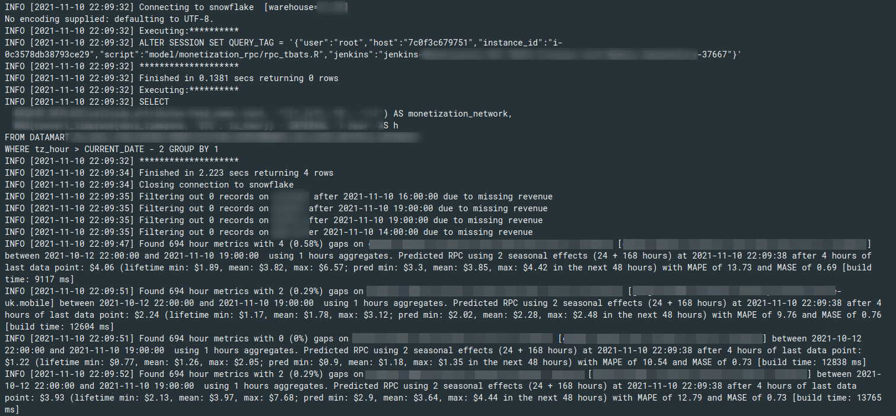
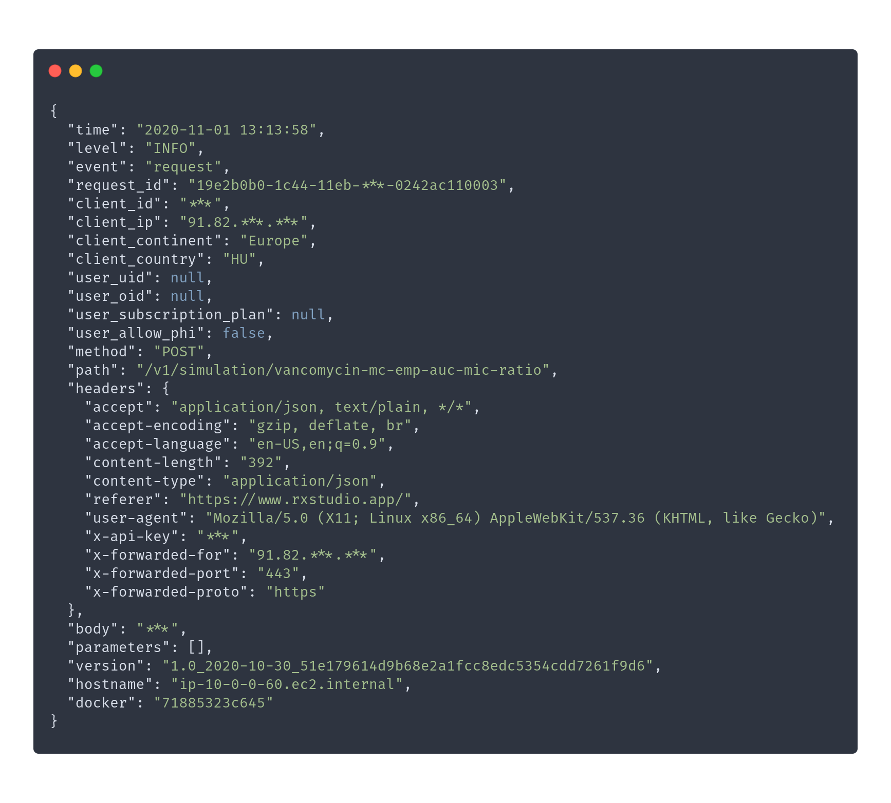
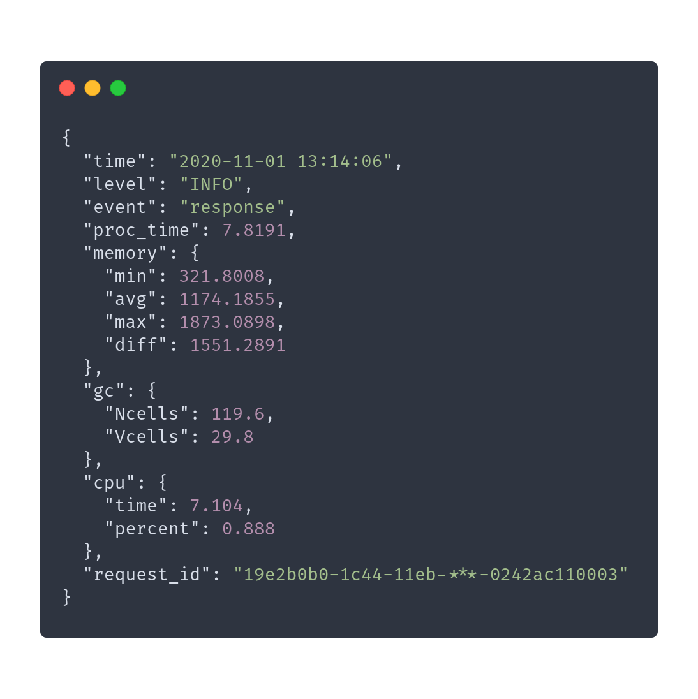
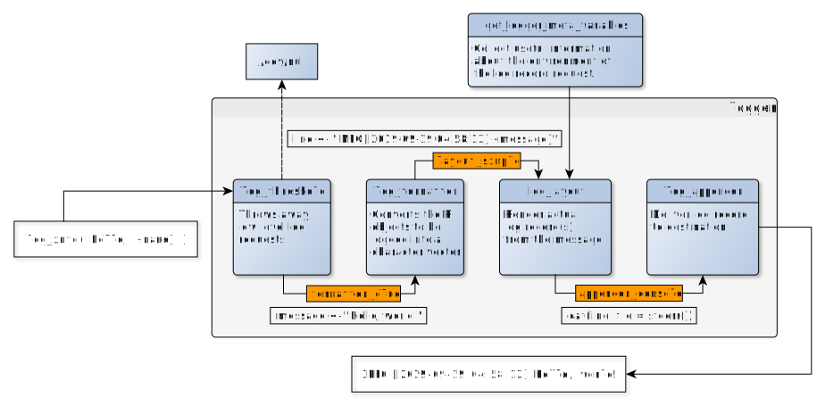
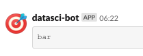
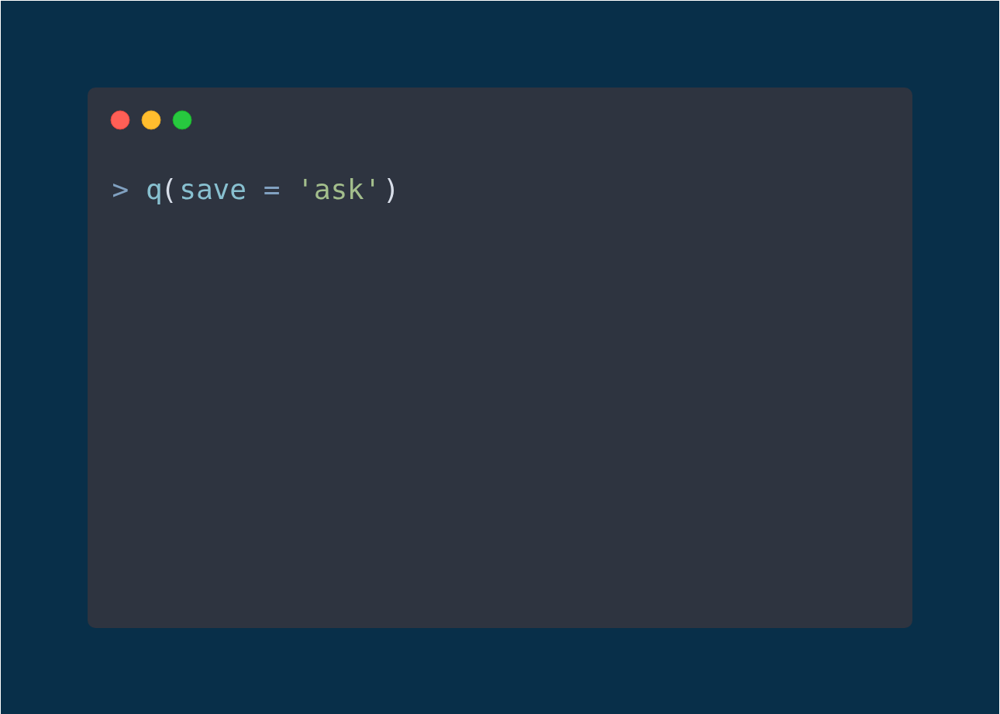
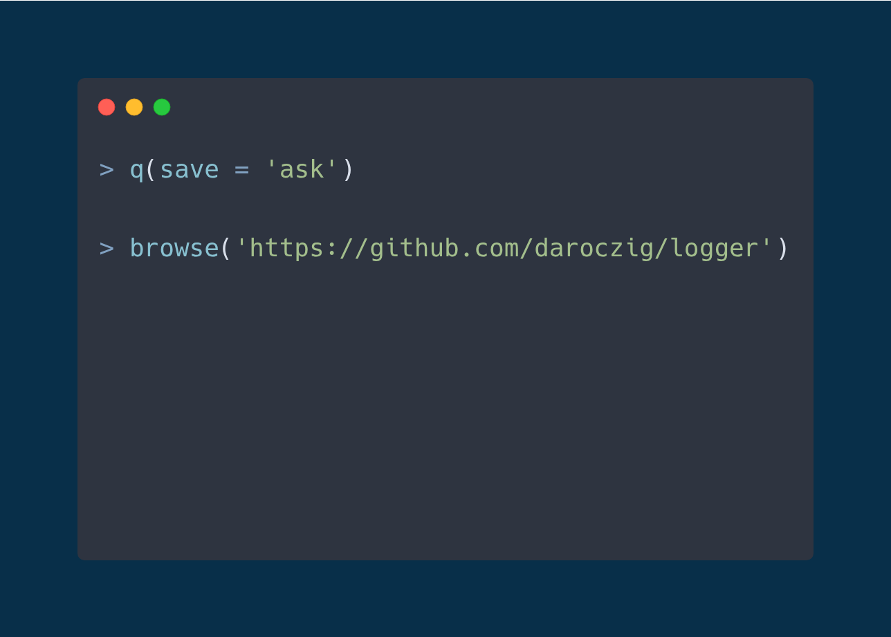
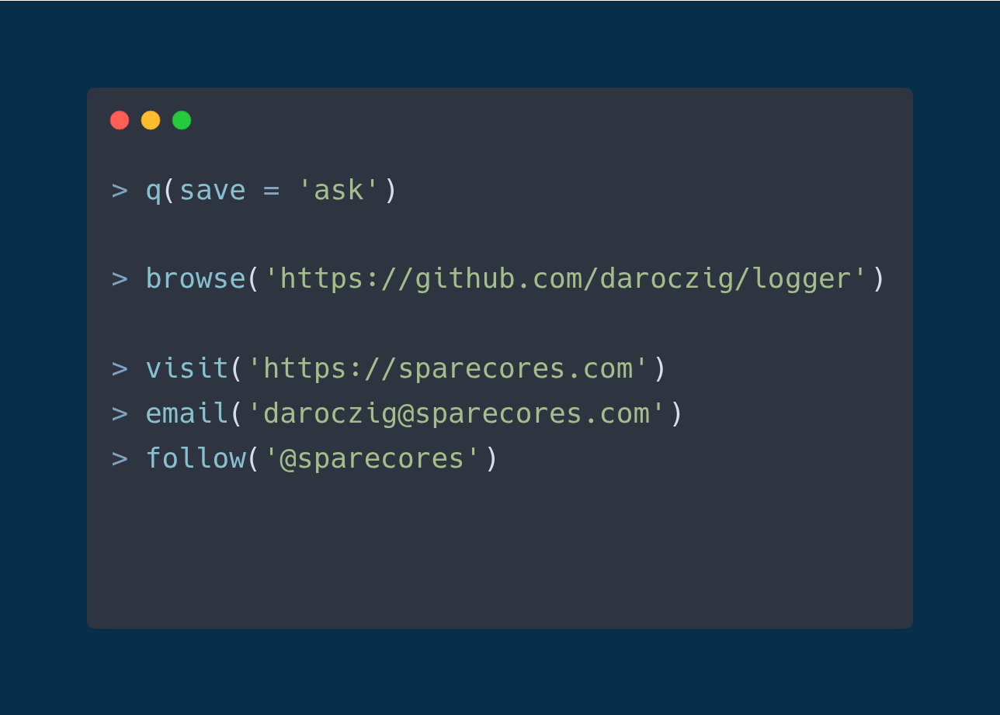
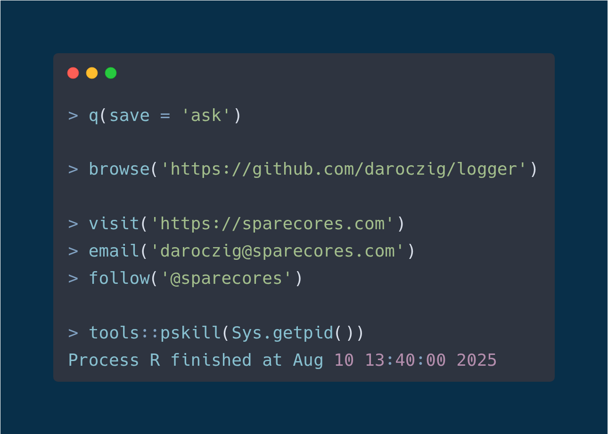

Getting Things Logged
Gergely Daroczi
2025-08-10

Getting Things Logged
Gergely Daróczi
Spare Cores
Slides: sparecores.com/talks
Press Space or click the green arrow icons to navigate the slides ->
> hello(“prod”)

> ??production
- 2006: Calling R scripts from PHP (both reading from MySQL) to generate embeddable plots for the web
-
2008: Automated/batch R scripts to generate thousands of pages of stats and plots from SPSS with
pdflatex -
2011: Ruby on Rails web application with
RApacheandpandocto report in plain English (NoSQL databases, scaling, security, central error tracking etc) - 2015: Data infrastructure for a fintech startup to use R for reporting, dashboards, batch jobs, and stream processing
- 2017: Scalable DS infrastructure for an adtech startup for batch training and live scoring ($$$)
> production <<- list(…)
Using in R in a non-interactive way:
- Running R without manual intervention (e.g. scheduled via CRON, triggered via upstream job trigger or API request)
-
Standard, e.g. containerized environment (pinned R and package versions, OS packages,
.Rprofileetc) - Security! (e.g. safeguarded prod env, encrypted credentials, aware of Little Bobby Tables, AppArmor etc)
-
Job output is informative (logging), recorded (logging) and monitored (e.g. CloudWatch logs and
errorhandler for Sentry), alerts and notifications, PagerDuty etc
> debug()

> traceback()
> for (var in seq) print
> for (var in seq) print
[1] "2025-08-09 10:00:00 | 1 out of 42 = 2 %"
[1] "2025-08-09 10:00:01 | 2 out of 42 = 5 %"
[1] "2025-08-09 10:00:02 | 3 out of 42 = 7 %"
[1] "2025-08-09 10:00:03 | 4 out of 42 = 10 %"
[1] "2025-08-09 10:00:04 | 5 out of 42 = 12 %"
[1] "2025-08-09 10:00:05 | 6 out of 42 = 14 %"
[1] "2025-08-09 10:00:06 | 7 out of 42 = 17 %"
[1] "2025-08-09 10:00:07 | 8 out of 42 = 19 %"
[1] "2025-08-09 10:00:08 | 9 out of 42 = 21 %"
[1] "2025-08-09 10:00:09 | 10 out of 42 = 24 %"
[1] "2025-08-09 10:00:10 | 11 out of 42 = 26 %"
[1] "2025-08-09 10:00:11 | 12 out of 42 = 29 %"
[1] "2025-08-09 10:00:12 | 13 out of 42 = 31 %"
[1] "2025-08-09 10:00:13 | 14 out of 42 = 33 %"
[1] "2025-08-09 10:00:14 | 15 out of 42 = 36 %"
[1] "2025-08-09 10:00:15 | 16 out of 42 = 38 %"
[1] "2025-08-09 10:00:16 | 17 out of 42 = 40 %"
Error in .subset2(x, i, exact = exact) : subscript out of bounds
Execution halted> for (var in seq) cat
> mclapply(seq, cat)
mclapply(1:N, function(n) {
## do something slow
log(paste(i, 'out of', N, '=', round(i / N * 100), '%'))
}
[1] "2025-08-09 00:05:34 | 1 out of 42 = 2 %"
[1] "2025-08-09 00:05:35 | 2 out of 42 = 5 %"
[1] "2025-08-09 00:05:39 | 10 out of 42 = 24 %"
[1] "2025-08-09 00:05:35 | 3 out of 42 = 7 %"
[1] "2025-08-09 00:05:39 | 11 out of 42 = 26 %"
[1] "2025-08-09 00:05:36 | 4 out of 42 = 10 %"
[1] "2025-08-09 00:05:37 | 7 out of 42 = 17 %"
[1] "2025-08-09 00:05:38 | 8 out of 42 = 19 %"
[1] "2025-08-09 00:05:40 | 12 out of 42 = 29 %"[1] "2025-08-09 00:05:36 | 5 out of 42 = 12 %"
[1] "2025-08-09 00:05:37 | 16 out of 42 = 19 %"
[1] "2025-08-09 00:05:38 | 13 out of 42 = 31 %"
[1] "2025-08-09 00:05:37 | 19 out of 42 = 45 %"
[1] "2025-08-09 00:05:38 | 22 out of 42 = 52 %"
[1] "2025-08-09 00:05:37 | 28 out of 42 = 67 %"
[1] "2025-08-09 00:05:38 | 21 out of 42 = 50 %"
[1] "2025-08-09 00:05:37 | 26 out of 42 = 62 %"
[1] "2025-08-09 00:05:38 | 24 out of 42 = 57 %"
Error in .subset2(x, i, exact = exact) : subscript out of bounds
Execution halted> ??log
> library(data.table)
> packages <- data.table(available.packages())
## avoid analog, logit, (archeo|bio|genea|hydro|topo|...)logy
> packages[grepl('(?<!ana)log(?![it|y])', Package, perl = TRUE), Package]
[1] "adjustedcranlogs" "bayesloglin" "blogdown"
[4] "CommunityCorrelogram" "cranlogs" "efflog"
[7] "eMLEloglin" "futile.logger" "gemlog"
[10] "gglogo" "ggseqlogo" "homologene"
[13] "lifelogr" "log4r" "logbin"
[16] "logconcens" "logcondens" "logcondens.mode"
[19] "logcondiscr" "logger" "logging"
[22] "loggit" "loggle" "logKDE"
[25] "loglognorm" "logmult" "lognorm"
[28] "logNormReg" "logOfGamma" "logspline"
[31] "lolog" "luzlogr" "md.log"
[34] "mdir.logrank" "mpmcorrelogram" "PhylogeneticEM"
[37] "phylogram" "plogr" "poilog"
[40] "rChoiceDialogs" "reactlog" "rmetalog"
[43] "robustloggamma" "rsyslog" "shinylogs"
[46] "ssrm.logmer" "svDialogs" "svDialogstcltk"
[49] "tabulog" "tidylog" "wavScalogram"> !!log

> !!log

> demo(logger)
library(logger)
log_info('Script starting up...')
#> INFO [2018-20-11 22:49:36] Script starting up...log_threshold(DEBUG)
for (letter in letters) {
lpkgs <- sum(grepl(letter, pkgs[, 'Package'], ignore.case = TRUE))
log_level(if (lpkgs < 5000) TRACE else DEBUG,
'{lpkgs} R packages including the {shQuote(letter)} letter')
}
#> DEBUG [2018-20-11 22:49:38] 6300 R packages including the 'a' letter
#> DEBUG [2018-20-11 22:49:38] 6772 R packages including the 'e' letter
#> DEBUG [2018-20-11 22:49:38] 5412 R packages including the 'i' letter
#> DEBUG [2018-20-11 22:49:38] 7014 R packages including the 'r' letter
#> DEBUG [2018-20-11 22:49:38] 6402 R packages including the 's' letter
#> DEBUG [2018-20-11 22:49:38] 5864 R packages including the 't' letter> demo(helpers)
log_threshold(TRACE)
log_eval(nrow(mtcars), level = TRACE)
#> TRACE [2025-08-09 04:25:17] 'nrow(mtcars)' => '32L'log_warnings()
chisq.test(table(mtcars$gear, mtcars$am))
#> WARN [2025-08-09 12:32:04] Chi-squared approximation may be incorrect
#>
#> Pearson's Chi-squared test
#>
#> data: table(mtcars$gear, mtcars$am)
#> X-squared = 20.945, df = 2, p-value = 2.831e-05
#>
#> Warning message:
#> In chisq.test(table(mtcars$gear, mtcars$am)) :
#> Chi-squared approximation may be incorrect> demo(rainbow)
library(logger)
log_layout(layout_glue_colors)
log_threshold(TRACE)
log_info('Starting the script...')
log_debug('This is the second log line')
log_trace('Note that the 2nd line is being placed right after the 1st one.')
log_success('Doing pretty well so far!')
log_warn('But beware, as some errors might come :/')
log_error('This is a problem')
log_debug('Note that getting an error is usually bad')
log_error('This is another problem')
log_fatal('The last problem')
> demo(production)
> demo(production)

> demo(production)

> str(logger)
> .onLoad
> ?log_level
> ??formatter
-
formatter_paste -
formatter_sprintf -
formatter_glue -
formatter_glue_or_sprintf -
formatter_logging -
formatter_json -
formatter_pander
> ??layout
layout_json()(level = INFO, msg = 'Hello, world!')
#> {"time":"2025-08-09 10:00:00","level":"INFO","ns":null,"ans":"global",
#> "topenv":"R_GlobalEnv","fn":"cat","node":"nevermind","arch":"x86_64",
#> "os_name":"Linux","os_release":"4.15.0-20-generic",
#> "os_version":"#21-Ubuntu SMP Sat Aug 09 06:16:15 UTC 2025",
#> "pid":3601,"user":"daroczig","msg":"Hello, world!"}> ??appender
-
appender_console/appender_stderr -
appender_stdout -
appender_file(with log rotation) -
appender_tee
-
appender_slack -
appender_telegram -
appender_pushbullet
-
appender_syslog -
appender_kinesis(streaming) -
appender_insert(database connection)
-
appender_async
> system.time(appender)
> ?appender_async
-
create a local, disk-based storage for the message queue via
txtq -
start a background process for the async execution of the message queue with
callr - loads minimum required packages in the background process
- connects to the message queue from the background process
-
pass actual
appenderfunction to the background process (serialized to disk) - pass parameters of the async appender to the background process (eg batch size)
- start infinite loop processing log records
- check if background process still works …
> ?appender_async
-
create a local, disk-based storage for the message queue via
txtq -
start a background process for the async execution of the message queue with
callr - loads minimum required packages in the background process
- connects to the message queue from the background process
-
pass actual
appenderfunction to the background process (serialized to disk) - pass parameters of the async appender to the background process (eg batch size)
- start infinite loop processing log records
- check if background process still works …
> ?appender_async

Huge thanks to:
- Hadley Wickham
(initiative and main PR) - Charlie Gao
(follow-up fixes and support)
> example(appender_async)
> do.call(…, logger)
- log threshold
- log message formatter
- log record layout
- log record destination(s)
> do.call(…, logger)
- log threshold(s)
- log message formatter(s)
- log record layout(s)
- log record destination(s)
> ?namespace
log_appender(appender_stderr)
log_threshold(INFO)
my_appender <- appender_async(appender_slack(channel = '#foobar', token = '...'))
log_appender(my_appender, namespace = 'slack')
log_threshold(WARN, namespace = 'slack')
> ?assignInMyNamespace
R packages using logger automatically gets their own namespace, so eg dbr using logger can be silenced by
> namespace^2
log_appender(appender_stderr)
log_threshold(INFO)
log_appender(appender_file(file = '/var/log/myapp.log'), index = 2)
log_threshold(TRACE, index = 2)
my_appender <- appender_async(appender_slack(channel = '#foobar', token = '...'))
log_appender(my_appender, index = 3)
log_threshold(ERROR, index = 3)Slack: 🙊
> help(package = logger)
> logger::log_eval()
> logger::log_tictoc()
> logger::log_messages()
> logger::log_shiny_input_changes()
library(shiny)
ui <- bootstrapPage(
numericInput('mean', 'mean', 0),
numericInput('sd', 'sd', 1),
textInput('title', 'title', 'title'),
plotOutput('plot')
)
server <- function(input, output) {
logger::log_shiny_input_changes(input)
output$plot <- renderPlot({
hist(rnorm(1e3, input$mean, input$sd), main = input$title)
})
}
shinyApp(ui = ui, server = server)> logger::log_shiny_input_changes()
Listening on http://127.0.0.1:8080
INFO [2025-08-09 16:59:17] Default Shiny inputs initialized: {"mean":0,"title":"title","sd":1}
INFO [2025-08-09 16:59:26] Shiny input change detected on mean: 0 -> 1
INFO [2025-08-09 16:59:27] Shiny input change detected on mean: 1 -> 2
INFO [2025-08-09 16:59:27] Shiny input change detected on mean: 2 -> 3
INFO [2025-08-09 16:59:27] Shiny input change detected on mean: 3 -> 4
INFO [2025-08-09 16:59:27] Shiny input change detected on mean: 4 -> 5
INFO [2025-08-09 16:59:27] Shiny input change detected on mean: 5 -> 6
INFO [2025-08-09 16:59:27] Shiny input change detected on mean: 6 -> 7
INFO [2025-08-09 16:59:29] Shiny input change detected on sd: 1 -> 2
INFO [2025-08-09 16:59:29] Shiny input change detected on sd: 2 -> 3
INFO [2025-08-09 16:59:29] Shiny input change detected on sd: 3 -> 4
INFO [2025-08-09 16:59:29] Shiny input change detected on sd: 4 -> 5
INFO [2025-08-09 16:59:29] Shiny input change detected on sd: 5 -> 6
INFO [2025-08-09 16:59:29] Shiny input change detected on sd: 6 -> 7
INFO [2025-08-09 16:59:34] Shiny input change detected on title: title -> sfdsadsads> importFrom(logger, …)

Source: DBA Reactions
> logger(…, namespace = ‘botor’)
library(botor)
my_mtcars <- s3_read('s3://botor/example-data/mtcars.csv', read.csv)
#> DEBUG [2025-08-09 04:46:57] Downloaded 1303 bytes from s3://botor/example-data/mtcars.csv
#> and saved at '/tmp/RtmpLW4bY4/file63ff42ed2fe1'log_threshold(TRACE, namespace = 'botor')
my_mtcars <- s3_read('s3://botor/example-data/mtcars.csv.gz',
read.csv, extract = 'gzip')
#> TRACE [2025-08-09 04:48:02] Downloading s3://botor/example-data/mtcars.csv.gz to
#> '/tmp/RtmpLW4bY4/file63ff17e137e9' ...
#> DEBUG [2025-08-09 04:48:03] Downloaded 567 bytes from s3://botor/example-data/mtcars.csv.gz
#> and saved at '/tmp/RtmpLW4bY4/file63ff17e137e9'
#> TRACE [2025-08-09 04:48:03] Decompressed /tmp/RtmpLW4bY4/file63ff17e137e9 via gzip
#> from 567 to 1303 bytes
#> TRACE [2025-08-09 04:48:03] Deleted /tmp/RtmpLW4bY4/file63ff17e137e9> !logger(…, namespace = ‘botor’)
> demo(dbr)
library(DBI)
con <- dbConnect(
RMySQL::MySQL(),
dbname = "shinydemo",
host = "shiny-demo.csa7qlmguqrf.us-east-1.rds.amazonaws.com",
username = "guest",
password = "guest")
query <- dbSendQuery(
con,
"SELECT Continent, COUNT(DISTINCT(Region)) FROM Country GROUP BY Continent")
res <- dbFetch(query)
dbClearResult(query)
dbDisconnect(con)Spot the issues in the above code block!
> demo(dbr)
“When I woke up the next morning, I had four emails and a missed phone call from Amazon AWS – something about 140 servers running on my AWS account, mining Bitcoin.” – Andrew Hoffman
SELECT
TO_HEX(CODE_POINTS_TO_BYTES([0xac, num2, num3, num4])) AS nonce
FROM
UNNEST(GENERATE_ARRAY(0, 255)) num2,
UNNEST(GENERATE_ARRAY(0, 255)) num3,
UNNEST(GENERATE_ARRAY(0, 255)) num4
WHERE
TO_HEX(REVERSE(SHA256(SHA256(CONCAT(FROM_HEX(
'000000204a4ef98461ee26898076e6a2cfc7c764d02b5f8d670832000000000000000000f99f5c4d5025979fcb33d245536a55b628d4564c075c0210cbbc941ad79fdbc5e491b55a494a5117'), CODE_POINTS_TO_BYTES([0xac, num2, num3, num4]) ))))) LIKE '000000000000000000%'> logger(…, namespace = ‘dbr’)
library(dbr)
str(db_query('SELECT 42', 'sqlite'))
#> INFO [2025-08-10 17:07:12] Connecting to sqlite
#> INFO [2025-08-10 17:07:12] Executing:**********
#> INFO [2025-08-10 17:07:12] SELECT 42
#> INFO [2025-08-10 17:07:12] ********************
#> INFO [2025-08-10 17:07:12] Finished in 0.0007429 secs returning 1 rows
#> INFO [2025-08-10 17:07:12] Closing connection to sqlite
#> 'data.frame': 1 obs. of 1 variable:
#> $ 42: int 42
#> - attr(*, "when")= POSIXct, format: "2025-08-10 17:07:12"
#> - attr(*, "db")= chr "sqlite"
#> - attr(*, "time_to_exec")=Class 'difftime' atomic [1:1] 0.000743
#> .. ..- attr(*, "units")= chr "secs"
#> - attr(*, "statement")= chr "SELECT 42"> logger(…, namespace = ‘dbr’)
default:
shinydemo:
drv: !expr RMySQL::MySQL()
host: shiny-demo.csa7qlmguqrf.us-east-1.rds.amazonaws.com
username: guest
password: guest
dbname: shinydemoshinydemo:
drv: !expr RMySQL::MySQL()
host: !kms |
AQICAHiMkU2ZNbL+kRcQoM3wGpuLb8HbIKjM9VcEGt72rZV2SAEXX7aTXvtsf91BzgoiiIDh
AAAAlDCBkQYJKoZIhvcNAQcGoIGDMIGAAgEAMHsGCSqGSIb3DQEHATAeBglghkgBZQMEAS4w
EQQMgVoMPjgAi+S7i7cvAgEQgE5X4dnyt/Tl0+PiX/yjzdC2wYl+tWzvHnApAhIahQroK+VJ
8OQEQse/s/VE6n2gHPuXe4c/9lK9Od6e1aR8+YZCflyOA5F2sWFz6+hU5XI=
username: !aws_parameter |-
/prod/db/shinydemo/username
password: !aws_secret |-
prod/db/shinydemo/password
dbname: shinydemo> logger(…, namespace = ‘dbr’)
db_query(
sql = "SELECT Continent, COUNT(DISTINCT(Region)) FROM Country GROUP BY Continent",
db = 'shinydemo')
#> INFO [2025-08-09 05:02:30] Looking up config for shinydemo
#> INFO [2025-08-09 05:02:30] Decrypting string via KMS ...
#> INFO [2025-08-09 05:02:30] Decrypting string via KMS ...
#> INFO [2025-08-09 05:02:31] Decrypting string via KMS ...
#> INFO [2025-08-09 05:02:31] Connecting to shinydemo
#> INFO [2025-08-09 05:02:32] Executing:**********
#> INFO [2025-08-09 05:02:32] SELECT Continent, COUNT(DISTINCT(Region)) FROM Country GROUP BY Continent
#> INFO [2025-08-09 05:02:32] ********************
#> INFO [2025-08-09 05:02:32] Finished in 0.2213 secs returning 7 rows
#> INFO [2025-08-09 05:02:32] Closing connection to shinydemo
#> Continent COUNT(DISTINCT(Region))
#> 1: Asia 4
#> 2: Europe 6
#> 3: North America 3
#> 4: Africa 5
#> 5: Oceania 5
#> 6: Antarctica 1
#> 7: South America 1> mclapply(…, db_config)
It’s not caching the connection this time, only the credentials.
> mclapply(…, db_query)
> parallel::mclapply(1:16, function(i) db_query("SELECT 42", "sqlite"), mc.cores = 8)
INFO [2025-08-09 03:05:04] Connecting to sqlite
INFO [2025-08-09 03:05:04] Executing:**********
INFO [2025-08-09 03:05:04] SELECT 42
INFO [2025-08-09 03:05:04] Connecting to sqlite
INFO [2025-08-09 03:05:04] ********************
INFO [2025-08-09 03:05:04] Executing:**********
INFO [2025-08-09 03:05:04] Finished in 0.001053 secs returning 1 rows
INFO [2025-08-09 03:05:04] SELECT 42
INFO [2025-08-09 03:05:04] Closing connection to sqlite
INFO [2025-08-09 03:05:04] ********************
INFO [2025-08-09 03:05:04] Connecting to sqlite
INFO [2025-08-09 03:05:04] Connecting to sqlite
INFO [2025-08-09 03:05:04] Executing:**********
INFO [2025-08-09 03:05:04] Finished in 0.005117 secs returning 1 rows
INFO [2025-08-09 03:05:04] SELECT 42
INFO [2025-08-09 03:05:04] Closing connection to sqlite
INFO [2025-08-09 03:05:04] ********************
INFO [2025-08-09 03:05:04] Connecting to sqlite
INFO [2025-08-09 03:05:04] Executing:**********
INFO [2025-08-09 03:05:04] Connecting to sqlite
INFO [2025-08-09 03:05:04] Finished in 0.003497 secs returning 1 rows
INFO [2025-08-09 03:05:04] SELECT 42
INFO [2025-08-09 03:05:04] ********************
INFO [2025-08-09 03:05:04] Executing:**********
INFO [2025-08-09 03:05:04] Connecting to sqlite
INFO [2025-08-09 03:05:04] Closing connection to sqlite
INFO [2025-08-09 03:05:04] SELECT 42
INFO [2025-08-09 03:05:04] Executing:**********
INFO [2025-08-09 03:05:04] ********************
INFO [2025-08-09 03:05:04] Executing:**********
INFO [2025-08-09 03:05:04] SELECT 42
INFO [2025-08-09 03:05:04] Finished in 0.0008972 secs returning 1 rows
INFO [2025-08-09 03:05:04] SELECT 42
INFO [2025-08-09 03:05:04] Finished in 0.00947 secs returning 1 rows
INFO [2025-08-09 03:05:04] ********************
INFO [2025-08-09 03:05:04] ********************
INFO [2025-08-09 03:05:04] Finished in 0.001237 secs returning 1 rows
INFO [2025-08-09 03:05:04] Connecting to sqlite
INFO [2025-08-09 03:05:04] Closing connection to sqlite
INFO [2025-08-09 03:05:04] Finished in 0.001038 secs returning 1 rows
INFO [2025-08-09 03:05:04] Connecting to sqlite
INFO [2025-08-09 03:05:04] Closing connection to sqlite
INFO [2025-08-09 03:05:04] Closing connection to sqlite
INFO [2025-08-09 03:05:04] Connecting to sqlite
INFO [2025-08-09 03:05:04] Connecting to sqlite
INFO [2025-08-09 03:05:04] Connecting to sqlite
INFO [2025-08-09 03:05:04] Executing:**********
INFO [2025-08-09 03:05:05] SELECT 42
INFO [2025-08-09 03:05:05] Executing:**********
INFO [2025-08-09 03:05:05] Executing:**********
INFO [2025-08-09 03:05:05] ********************
INFO [2025-08-09 03:05:05] Closing connection to sqlite
INFO [2025-08-09 03:05:05] Executing:**********
INFO [2025-08-09 03:05:05] Connecting to sqlite
INFO [2025-08-09 03:05:05] SELECT 42
INFO [2025-08-09 03:05:05] SELECT 42
INFO [2025-08-09 03:05:05] Finished in 0.0009949 secs returning 1 rows
INFO [2025-08-09 03:05:05] ********************
INFO [2025-08-09 03:05:05] Executing:**********
INFO [2025-08-09 03:05:05] SELECT 42
INFO [2025-08-09 03:05:05] SELECT 42
INFO [2025-08-09 03:05:05] Closing connection to sqlite
INFO [2025-08-09 03:05:05] Executing:**********
INFO [2025-08-09 03:05:05] ********************
INFO [2025-08-09 03:05:05] ********************
INFO [2025-08-09 03:05:05] Finished in 0.001511 secs returning 1 rows
INFO [2025-08-09 03:05:05] Closing connection to sqlite
INFO [2025-08-09 03:05:05] ********************
INFO [2025-08-09 03:05:05] SELECT 42
INFO [2025-08-09 03:05:05] Connecting to sqlite
INFO [2025-08-09 03:05:05] ********************
INFO [2025-08-09 03:05:05] Finished in 0.001259 secs returning 1 rows
INFO [2025-08-09 03:05:05] Executing:**********
INFO [2025-08-09 03:05:05] Closing connection to sqlite
INFO [2025-08-09 03:05:05] SELECT 42
INFO [2025-08-09 03:05:05] Finished in 0.001187 secs returning 1 rows
INFO [2025-08-09 03:05:05] ********************
INFO [2025-08-09 03:05:05] Finished in 0.03187 secs returning 1 rows
INFO [2025-08-09 03:05:05] Finished in 0.009078 secs returning 1 rows
INFO [2025-08-09 03:05:05] Finished in 0.0009627 secs returning 1 rows
INFO [2025-08-09 03:05:05] Closing connection to sqlite
INFO [2025-08-09 03:05:05] Closing connection to sqlite
INFO [2025-08-09 03:05:05] Closing connection to sqlite
INFO [2025-08-09 03:05:05] Connecting to sqlite
INFO [2025-08-09 03:05:05] Closing connection to sqlite
INFO [2025-08-09 03:05:05] Connecting to sqlite
INFO [2025-08-09 03:05:05] Executing:**********
INFO [2025-08-09 03:05:05] Executing:**********
INFO [2025-08-09 03:05:05] SELECT 42
INFO [2025-08-09 03:05:05] SELECT 42
INFO [2025-08-09 03:05:05] ********************
INFO [2025-08-09 03:05:05] ********************
INFO [2025-08-09 03:05:05] Finished in 0.0007973 secs returning 1 rows
INFO [2025-08-09 03:05:05] Finished in 0.0007989 secs returning 1 rows
INFO [2025-08-09 03:05:05] Closing connection to sqlite
INFO [2025-08-09 03:05:05] Closing connection to sqlite> library(resource.tracker)
tracker <- ResourceTracker$new()
numbers <- 1:1e6
window <- 3
rollavg <- sapply(
seq_len(length(numbers) - window + 1),
function(i) mean(numbers[i:(i + window - 1)]))tracker$stats()
# List of 9
# $ process_cpu_usage :List of 2
# ..$ mean: num 1.12
# ..$ max : num 1.14
# $ process_memory :List of 2
# ..$ mean: num 728783
# ..$ max : num 798130
# $ process_gpu_usage :List of 2
# ..$ mean: num 0
# ..$ max : num 0
# $ process_gpu_vram :List of 2
# ..$ mean: num 0
# ..$ max : num 0
# $ process_gpu_utilized :List of 2
# ..$ mean: num 0
# ..$ max : num 0
# $ system_disk_space_used_gb:List of 1
# ..$ max: num 2560
# $ system_net_recv_bytes :List of 1
# ..$ sum: num 1840217
# $ system_net_sent_bytes :List of 1
# ..$ sum: num 1843725
# $ timestamp :List of 1
# ..$ duration: num 7> resource.tracker::recommend_resources()
tracker$recommend_resources()
# List of 4
# $ cpu : int 1
# $ memory: int 1024
# $ gpu : int 0
# $ vram : int 0tracker$recommend_server()
# List of 50
# $ vendor_id : chr "upcloud"
# $ server_id : chr "DEV-1xCPU-1GB-10GB"
# $ description : chr "Developer 1 vCPUs, 1 GB RAM"
# $ family : chr "Developer"
# $ vcpus : int 1
# $ hypervisor : chr "KVM"
# $ cpu_allocation : chr "Shared"
# $ cpu_cores : int 1
# $ cpu_architecture : chr "x86_64"
# $ cpu_manufacturer : chr "AMD"
# $ cpu_family : chr "EPYC"
# $ cpu_model : chr "7542"
# $ cpu_l1_cache : int 131072
# $ cpu_l2_cache : int 524288
# $ cpu_l3_cache : int 16777216
# $ cpu_flags : chr [1:88] "fpu" "vme" "de" "pse" ...
# $ memory_amount : int 1024
# $ storage_size : int 10
# $ inbound_traffic : num 0
# $ outbound_traffic : num 1024
# $ ipv4 : int 1
# $ price : num 0.0052
# ...> resource.tracker::process_metrics
tracker$system_metrics
# 'data.frame': 7 obs. of 21 variables:
# $ timestamp : POSIXct, format: "2025-08-08 00:02:28" "2025-08-08 00:02:29" ...
# $ processes : num 697 696 694 693 694 694 693
# $ utime : num 3.01 2.25 2.3 2.15 2.9 1.44 1.36
# $ stime : num 0.51 0.57 0.55 0.24 0.89 0.83 0.36
# $ cpu_usage : num 3.52 2.82 2.85 2.39 3.79 ...
# ...
tracker$process_metrics
# 'data.frame': 7 obs. of 12 variables:
# $ timestamp : POSIXct, format: "2025-08-08 00:02:28" "2025-08-08 00:02:29" ...
# $ pid : num 941247 941247 941247 941247 941247 ...
# $ children : num 4 4 4 4 4 4 4
# $ utime : num 1.01 1.02 1.01 1 0.99 1.04 1.01
# $ stime : num 0.1 0.12 0.07 0.13 0.14 0.09 0.09
# $ cpu_usage : num 1.11 1.14 1.08 1.13 1.13 1.13 1.1
# ...
tracker$get_combined_metrics()
# 'data.frame': 7 obs. of 32 variables:
# $ timestamp : POSIXct, format: "2025-08-08 00:02:28" "2025-08-08 00:02:29" ...
# $ system_processes : num 697 696 694 693 694 694 693
# $ system_utime : num 3.01 2.25 2.3 2.15 2.9 1.44 1.36
# $ system_stime : num 0.51 0.57 0.55 0.24 0.89 0.83 0.36
# $ system_cpu_usage : num 3.52 2.82 2.85 2.39 3.79 ...> resource.tracker::report()

> citation(package = “logger”)



